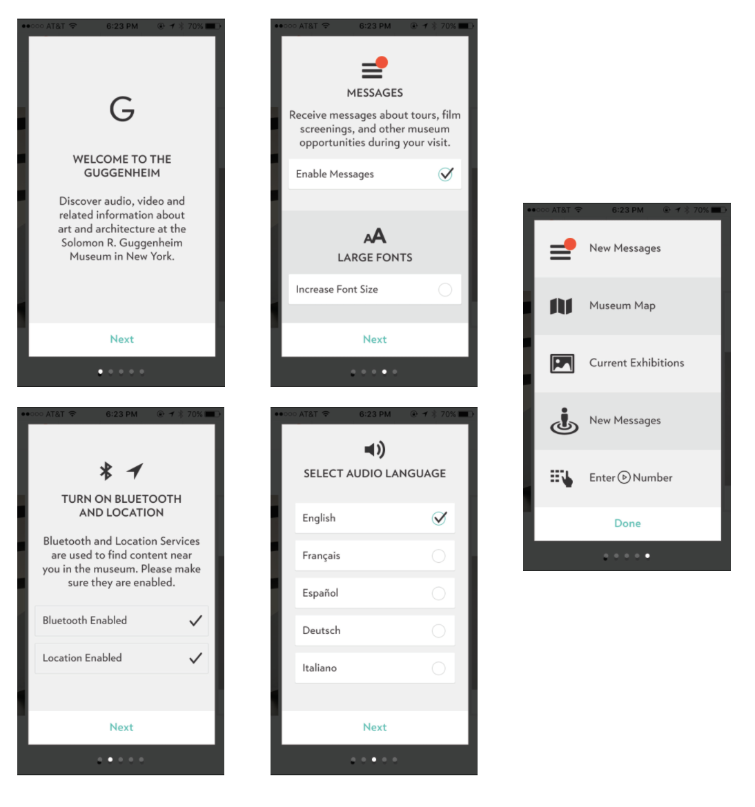

IxD & UX
Storm King Art Center
Case Study
Storm King Art Center is an outdoor art park spanning over 500 acres just an hour outside of New York City. Visitors can explore the extensive collection featuring major contemporary artists in the setting of vast open fields to secluded forest trails. I worked with two other design students to developed a solution for common problems people face when visiting Storm King. We determined there should be a mobile application that highlights valuable information and an interactive map to intuitively guide users through the art park.
“As with any outdoor exhibit, the weather is every bit its own, albeit uncredited, participant. On my trip, the low winter sun and warmed the fawny hues of dormant oaks and grasses… adding a creamy glow to each setting. And Jack Frost kissed every pond."
Christian H
“Unfortunately I was late for some of the exhibitions that were removed about week ago.”
Pablo C
“Unfortunately, we were unable to look through everything because it would be too much for my mom”
Hennie Rose D.
“We only found one restroom stop and were able to cool off in an exhibit inside one of the buildings. “
Trika R.
Guggenheim Museum
At first, our homepage was just an image of Storm King and four buttons below. The four buttons included: hours, history, events and bike/tram information. After our session, we learned that users preferred seeing artwork, upcoming events and exhibitions. The history section, although informative, was found to be not a major priority for users. Users agreed that the home page of the app should focus more on basic information. This new perspective influenced our decision to change the homepage layout and reprioritize certain sections. Now, we have Events, New Art, and Exhibitions in large display on top and have kept crucial information listed below.